| 日付 | 2026年2月23日（月） |
|---|---|
| 山域 | 大菩薩 |
| メンバー | 家族（妻） |
| 山行形態 | 日帰り |
| アクセス | 電車 |
| ルート (Map) | 初狩駅 (9:05) - (10:14) お伊勢山 - (10:37) 花咲山西登山口 - (11:32) 花咲山 (12:13) - (13:05) 花咲山東登山口 - (13:29) 大月駅 |
3連休の最終日。幕山にでも行こうかと考えていたが、
朝方の天気が悪そうなのと風が強そうなので行先を変更。
内陸部にある山梨の花咲山に行ってみることにする。
岩殿山の西にあるマイナーな山だが、前から気になっていた山だ。
初狩駅に到着。標高460m。
駅前に警察官がいて、安全登山の訓示とアミノバイタルの試供品をくれた。
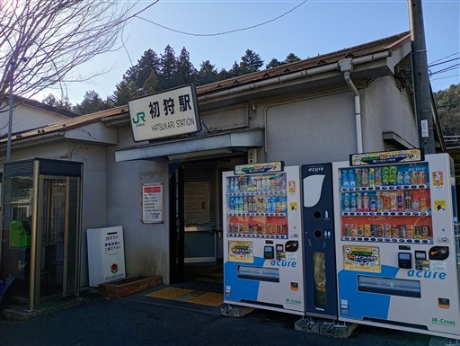
滝子山がひときわ大きい。
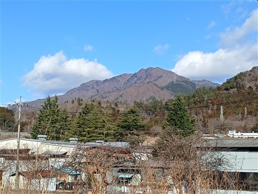
甲州街道を歩いていく。トラックなどの車通りがかなり多い。
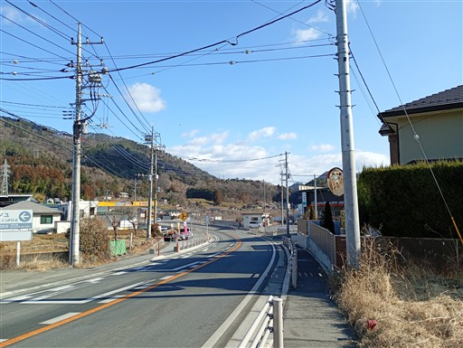
甲州街道から細い道に入って行くとすぐに真木諏訪神社がある。
細かい彫刻が施されている、あまり見ない形の神社だ。
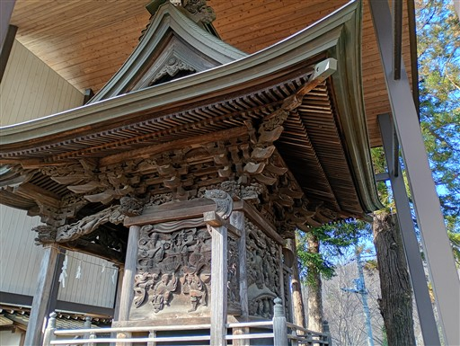
正面は平凡。
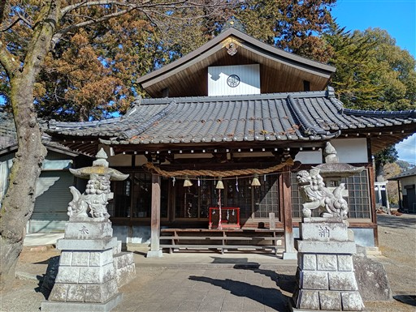
境内は大量のドングリが落ちている。
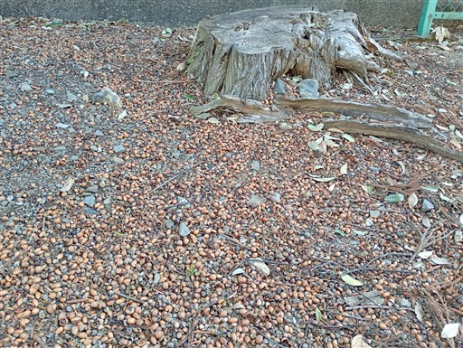
火の見櫓だろうか？
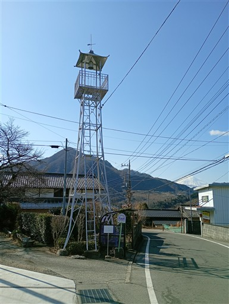
比較的細い路地なのだが、車通りがかなり多い。
どこかに抜けられる道でもないのだが、町の人たちの活動が活発なのだろう。
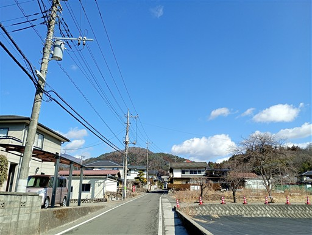
福正寺に到着。
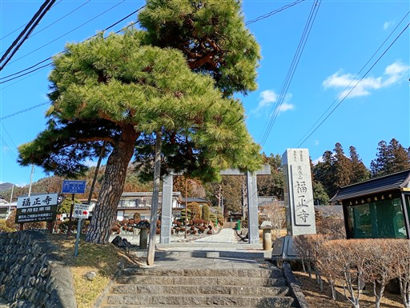
かなり立派な本堂だ。中を見学したかったが、扉が閉まっており鍵が掛かっている。
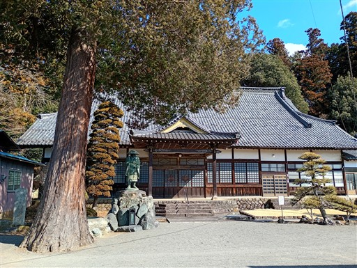
小さな鐘。鳴らしてよいかどうか分からなかったが、少し小さめの音で突いてみる。
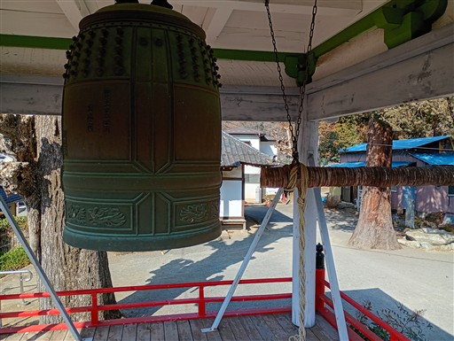
福正寺を後にする。高台からの展望が素晴らしい。
少し雲がかかっているが富士山が見える。左の山は高川山だ。
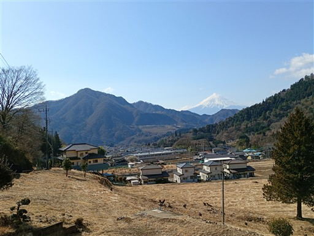
お伊勢山に到着。白簱史朗の碑がある。この辺りの出身だったようだ。
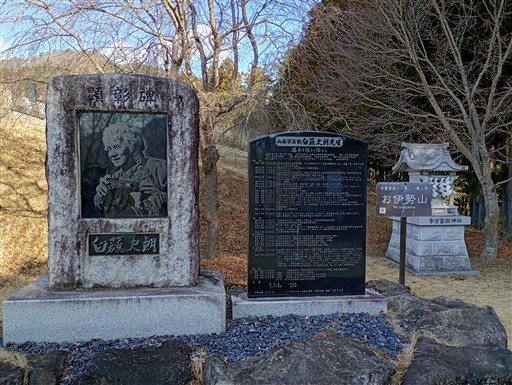
この辺りは桜の木が多く植えられている。
春にはさくら祭りが開催されるようだ。
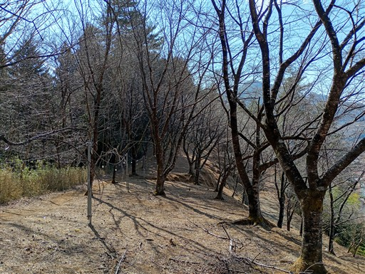
ここから4つほど神社が並ぶ。福正寺と合わせて五福参りと呼ばれている。
ここは神社の中で一番大きな天照皇大神宮。
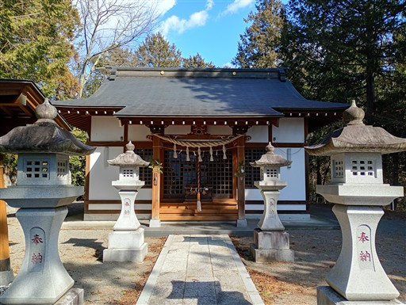
桜並木が続く。ベンチから富士山が見えている。
桜の季節は素晴らしい景色が広がるのだろう。
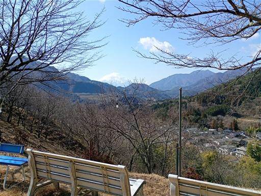
一番最後の根神神社。非常に小さな神社。
道順と逆に歩いてきたので、本来なら最初に出てくる神社だ。
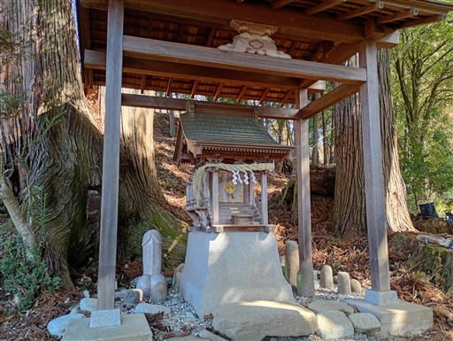
五福参りを終えて、車道を少し歩くと花咲山の登山口に到着する。
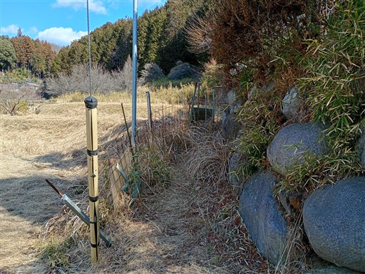
一気に坂を登ると、そこからは尾根道になる。
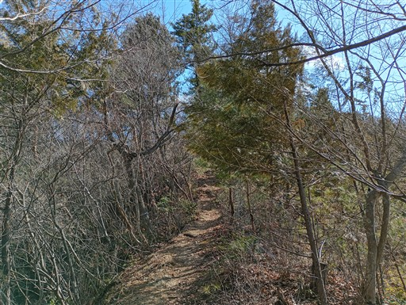
大月市街方面の展望が広がる。
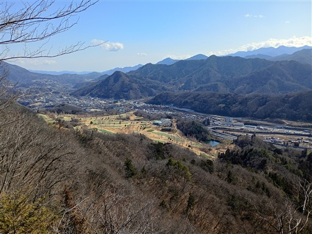
尾根道は続く。そこそこアップダウンがある。
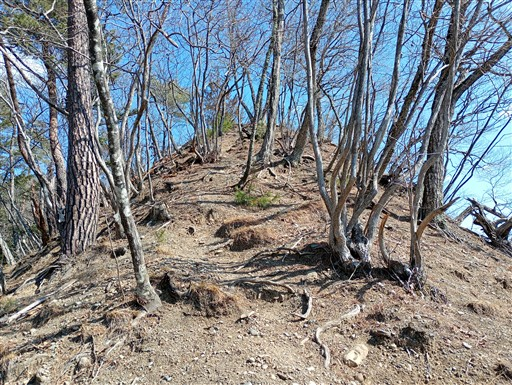
女幕岩。岩殿山ほどではないが、岩盤が露出している。
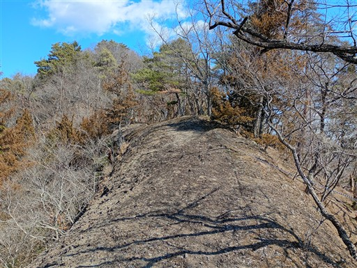
ここからも素晴らしい展望が広がる。
左に見えるのは滝子山。そこから右に長大な尾根が続いている。
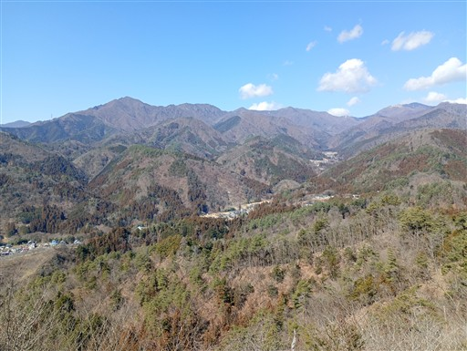
登山道に岩場が出てくる。
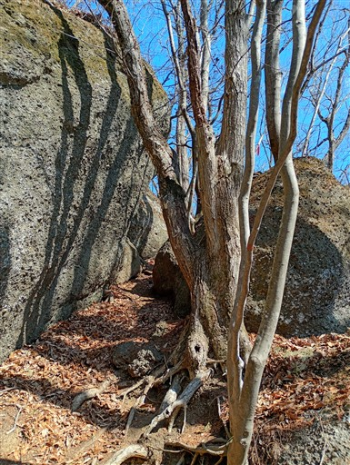
岩場の鎖。少し難しいポイントだ
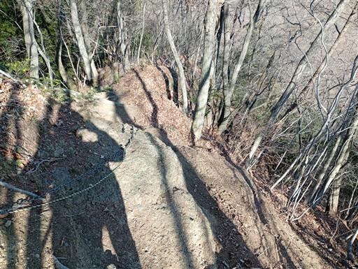
急斜面の岩尾根を下る。
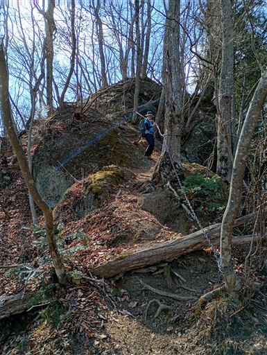
花咲山に到着。標高755m。
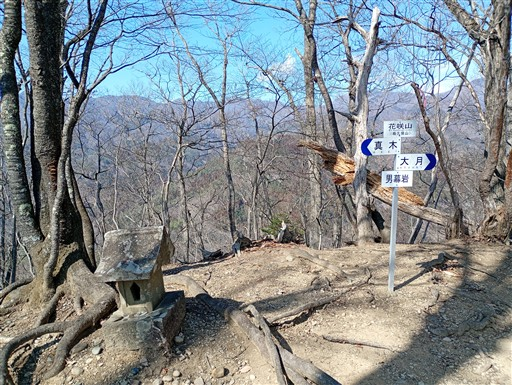
残念ながら展望は全く広がらないピークだ。
腰を掛ける場所もないが、ここで昼食をとることにする。
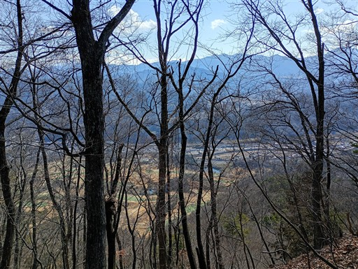
下山は大月方面へ。乾燥した砂の急斜面はよく滑る。
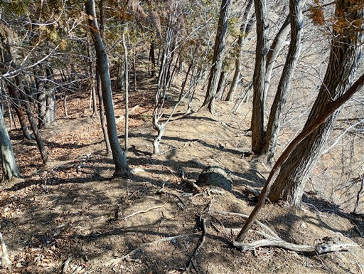
何度か小ピークを越えていく。1個1個のピークが結構な急斜面だ。
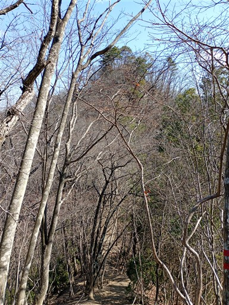
遠くに高く聳えているのは雁ヶ腹摺山。意外に格好良い姿だ。
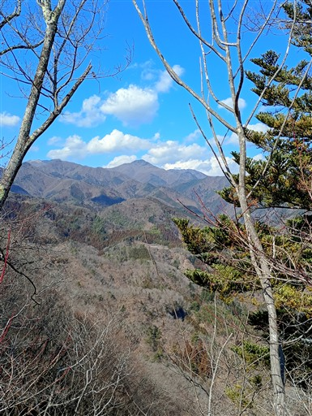
痩せ尾根。全体的に地形が急峻な山だ。
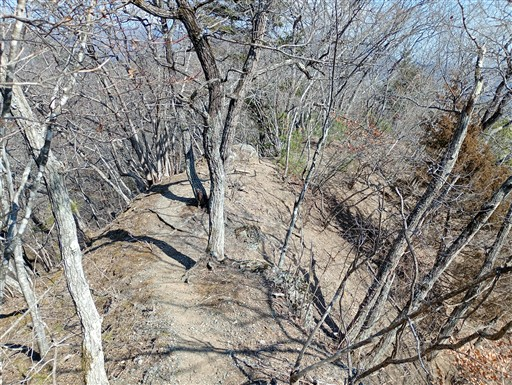
トラバース道。落葉が堆積した道は細く、斜面も急だ。
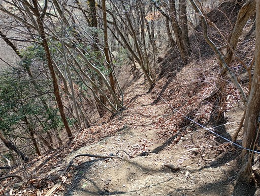
松の幼木と大木。
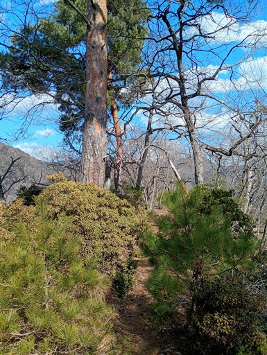
下山近くの場所に、唐突に祠が現れる。
昔はここを甲州街道が通っていたのだろうか？
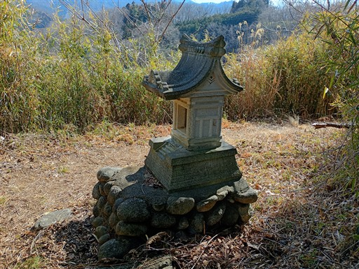
無事下山。
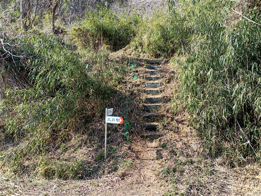
中央道のすぐ隣の車道を歩いていく。
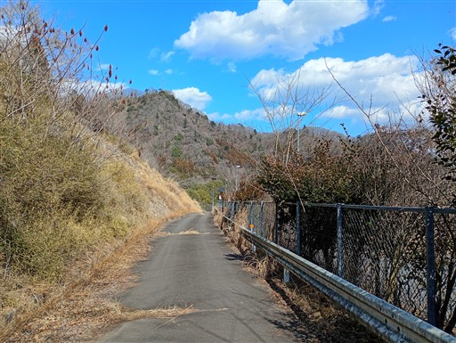
中央道の高架をくぐる。
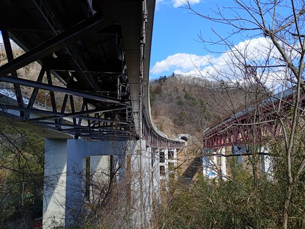
ちょっとショートカットして藪っぽい道を抜ける。
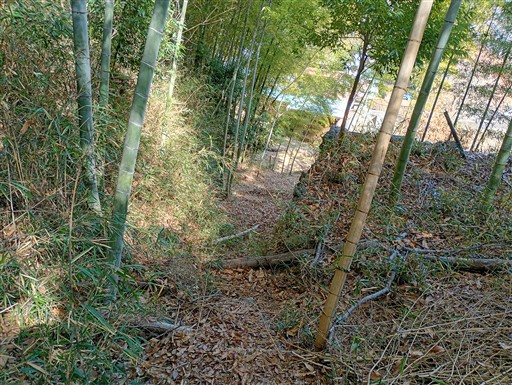
眼下に見えるのは桂川。水の色がきれいだ。
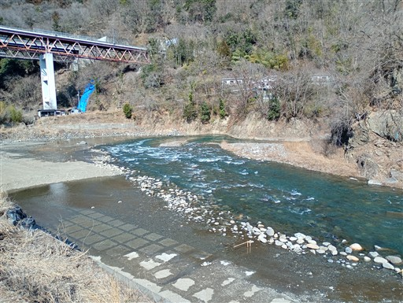
大月駅からほど近い場所だが、山に囲まれた美しい山村風景が広がる。
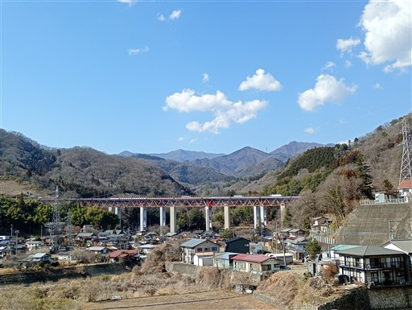
歩道橋を渡る。見えているのは左から岩殿山、百蔵山、扇山だ。
扇山の火災は収まったようだ。
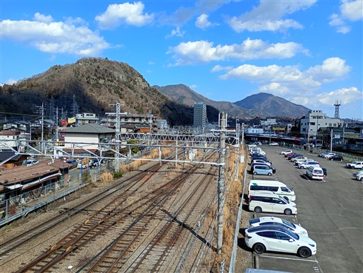
大月駅に到着。標高360m。
比較的軽い山だったが、急坂の登り下りが多く思ったより疲れた山行だった。
富士山や大菩薩連嶺、大月市街の展望が素晴らしかったが、
山頂からの展望が広がらなかったのが少し残念だった。
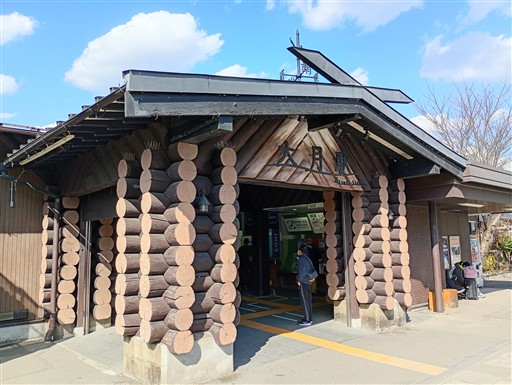